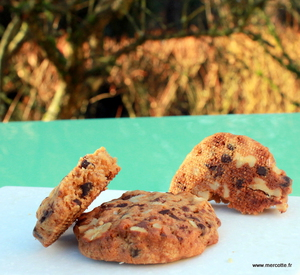

Actualités
Encore des cookies me direz-vous¬†? C’est un peu comme les macarons, une mode qui perdure… Il y a quelques¬†recettes sur ce blog¬†– suivez les liens- mais qui datent quand m√™me car je n’en fais pas si souvent. Alors¬†pour une reprise en douceur apr√®s les agapes de fin d’ann√©e pourquoi pas… En plus c’est une bonne excuse pour tester les nouvelles p√©pites au chocolat de Valrhona qui existent au chocolat noir et au lait, d‚Äôailleurs j’ai carr√©ment m√©lang√© les deux. Une alternative plus traditionnelle aux habituelles perles craquantes que j’utilisais jusque …
À propos de ...
|
|
|
|
Desserts individuels, Mignardises & petits gâteaux pour le thé
Pour les b√ªches la saison touche √† sa fin et elles vont bient√¥t se faire d√©tr√¥ner par les incontournables galettes ou couronne des rois selon la r√©gion o√π vous habitez … En tout cas m√™me si vous d√©gustez encore une b√ªche pour le jour de l’an elle¬†est¬†forc√©ment d√©j√† pr√™te et j’imagine qu’il vous reste, √† d√©faut d’insert et de mousse, quelques tomb√©es de biscuits¬†quels qu‚Äôils soient. Alors pour ne pas g√¢cher faites comme moi, imaginez de minis bouch√©es gourmandes.¬†Voil√† le recyclage d’aujourd’hui pour le sabl√© tass√© et le biscuit cuill√®re …
Pains & viennoiseries, G√¢teaux & entremets
Des pains d’√©pices, classiques, moelleux, traditionnels, originaux, bref diff√©rents il y ¬†en a d√©j√† un certain nombre sur le blog et avec des recettes des plus grands p√¢tissiers, comme Philippe Conticini,¬†Cyril¬†Lignac¬†ou Thierry Mulhaupt pour ne citer qu’eux, mais la recette de Pain d’√©pice √† l’ancienne de Christophe Felder¬†que j’ai vite rep√©r√©e dans son magnifique dernier livre, G√¢teaux est juste √©norme… Un ¬†pain¬†d’√©pice, brillant, moelleux, parfum√©, original avec une forme qui sort de l‚Äôordinaire m√™me si je n’ai pas tout √† fait les m√™mes moules anciens en fonte que Christophe. Rassurez-vous, …
Desserts individuels
Bien s√ªr cela fait quelques semaines que¬†vous me la r√©clamiez cette b√ªche 2015¬†mais vu mon emploi du temps plus que charg√©, difficile de¬†p√¢tisser¬†loin de ma cuisine savoyarde et sans mon pr√©cieux mat√©riel… Certes j’avais tent√© un ersatz facile qui pouvait faire office de dessert de No√´l mais cela n’a pas convaincu tout le monde, ce que je peux aussi comprendre ! D√®s mon retour en milieu de semaine j’ai donc concoct√© avec les moyens du bord et un peu trop rapidement √† mon go√ªt cette nouvelle b√ªche tr√®s vanille et …
Mignardises & petits gâteaux pour le thé, Gâteaux & entremets
Beaucoup d’entre vous me r√©clament la b√ªche de No√´l 2015 et cette ann√©e c’est bien mal parti puisque je ne rentre chez moi qu’√† la mi-d√©cembre, donc pas s√ªre d’avoir le temps d’en concocter une, d√©sol√©e. Mais le saviez-vous il y a d√©j√† 20 b√ªches sur le blog -clic- et avec un peu d’imagination en prenant un √©l√©ment par ci un √©l√©ment par l√† c’est bien le diable si vous n’arrivez pas √† en imaginer une nouvelle, prendre des initiatives et faire de nouveaux assemblages avec les recettes de base, …
G√¢teaux & entremets, Pains & viennoiseries
Le Kürtoskalacs, Epreuve Technique Le Meilleur Pâtissier, Emission Spéciale Trophée de Noël |
2015 déc
9
|
Tout n’est pas encore termin√© puisque ce mercredi soir vous allez retrouver une √©mission sp√©ciale Troph√©e de No√´l du Meilleur p√¢tissier avec pour l’occasion un d√©cor¬†r√©alis√© en une courte journ√©e par les √©quipes techniques de l’√©mission. Je vous laisse d√©couvrir le nouveau look de la tente et des alentours. Nous baignons en plein mois de juin dans la f√©erie de No√´l, ce qui √† l’heure de la diffusion est parfaitement d’actualit√© …
Et ce soir six p√¢tissiers nous rejoignent¬†pour essayer de remporter ce Troph√©e de No√´l. Vous allez retrouver¬†Thomas¬†et¬†Delphine de la …
Restaurants
√ätre un lundi¬†au coeur d’un prestigieux¬†vignoble et d’un grand chocolat¬†√† Tain l’Hermitage¬†jury des championnats du monde de p√¢t√© cro√ªte, go√ªter¬†12 superbes p√¢t√©s (attention pas les tranches enti√®res non quand m√™me) en les accompagnant des grands vins de notre h√¥te Michel Chapoutier qui vont crescendo au fil de la d√©gustation,¬†puis arroser le tout en attendant les r√©sultats, √ßa c’est fait. Mais quand m√™me, √™tre √† 10 minutes de train de Valence et de la meilleure femme chef du monde √ßa donne √† r√©fl√©chir, impossible vous imaginez bien de ne pas en …
G√¢teaux & entremets
La Prinsesst√•rta, l’Epreuve Technique de la Finale de la Saison 4 du Meilleur P√¢tissier |
2015 déc
2
|
Et nous y sommes d√©j√†, ce soir c’est la grande finale¬†de la saison 4 du Meilleur P√¢tissier et nous allons d√©couvrir¬†qui de nos p√¢tissiers amateurs¬†va l’emporter et nous proposer¬†son propre livre de recettes. Je sais que l‚Äô√©mission va manquer √† beaucoup d’entre vous, alors la semaine prochaine nous allons¬†jouer les prolongations avec une √©mission sp√©ciale No√´l o√π vous retrouverez m√™me des p√¢tissiers amateurs des saisons pr√©c√©dentes. Mais nous n’en somme pas l√†.
Apr√®s la revisite d’un grand classique de la p√¢tisserie¬†fran√ßaise, le Saint Honor√© propos√©e par Cyril, ¬†c’est un g√¢teau d’origine …
Desserts individuels, Mignardises & petits gâteaux pour le thé
D√©j√† la demi-finale, je n’ai pas vu le temps passer, il me semble que √ßa va tr√®s vite cette ann√©e ! L’√©tau se resserre et le suspense grandit. Qui selon vous va finalement acc√©der √† la finale ? Vous le saurez ce soir en d√©couvrant les √©preuves que nous avons r√©serv√©es √† nos p√¢tissiers amateurs.
Aujourd’hui¬†ils vont nous r√©galer avec¬†les g√¢teaux d’ici ou d’ailleurs et pour corser le tout nous allons¬†aussi jouer sur les quantit√©s √† r√©aliser. Pour¬†son √©preuve¬†Cyril va leur demander de revisiter le c√©l√®bre¬†Baklava, mais attention, il leur faudra …
Actualités et propos divers
C’est au Swiss√¥tel M√©tropole, en plein centre de Gen√®ve et¬†au bord du L√©man¬†qu’avait lieu cette ann√©e la seconde √©dition de la pr√©sentation des¬†b√ªches de No√´l des palaces de Gen√®ve. Voici donc nos¬†h√¥tes de cette ann√©e, Stefan Winistoerfer, le directeur g√©n√©ral¬†du Swiss√¥tel et les p√¢tissiers Pierrick Simon et Cl√©ment Dethorey devant leur belle r√©alisation.
Apr√®s les superbes b√ªches des p√¢tissiers des Relais Desserts et √† presque √† un mois¬†de No√´l, je vous invite √† admirer pour la r√©cr√©ation du dimanche et pour le plaisir des yeux ¬†les belles r√©alisations des p√¢tissiers participants. …
Cakes, Pains & viennoiseries
Comme le temps passe… Nous¬†sommes d√©j√†¬†en¬†6e semaine du concours du Meilleur P√¢tissier, le casting pour la saison 5 est lanc√© et heureusement pour notre ligne, au fil des semaines, nous avons de moins en moins de g√¢teaux √† d√©guster… Ce¬†mercredi apr√®s la premi√®re √©preuve o√π nos p√¢tissiers vont revisiter en g√¢teau roul√© une p√¢tisserie de leur choix, je vais leur demander pour l’√©preuve technique de r√©aliser un Krantz Cake. Dr√¥le de nom qui ne vous parle peut-√™tre pas sauf si vous √™tes un lecteur assidu des blogs culinaires.
En quelques mots …
Abonnements
| S'abonner via le flux RSS Suivez le blog depuis votre aggrégateur |
|
| S'abonner par e-mail Recevez un mail à chaque nouvel article |
|
| La Cuisine de Mercotte sur Google + Ajoutez le blog à votre cercle |
|
| La Cuisine de Mercotte sur hellocoton Ajoutez le blog à votre fil d'actualit√©s |
|
Livres et Applications
Vidéos sur les Macarons
Autres Vidéos
Le Post-It !

Retrouvez moi tous les jours du lundi au vendredi à 10h40
sur France Bleu Pays de Savoie
retrouvez les chroniques dans la rubrique 
ici-clic-  
L'actualité autour de la cuisine, les trucs et astuces, les nouveautés
c'est de temps en temps sur
Pour les foodistas une seule adresse
Actualités et évènements à venir
Dans votre langue
Nuage de Tags
Altal éditions apéritif biscuits bloggosphère Bons plans chambery chocolat Christophe Felder Christophe Michalak confiserie Cyril Lignac dessert Ecole Valrhona entremets entrée entrée froide foie gras Frédéric Bau Jean Sulpice jeu Laurence Salomon laurent petit M6 le meilleur pâtissier macarons menus Mercotte mise en bouche Philippe Conticini Pierre Hermé poisson propos divers recette recettes restaurant sablé breton Saveurs et Terroirs Soupe Sébastien Bouillet Tain L'Hermitage Thierry Mulhaupt Thuriès valrhona verrine verrines viande
WP Cumulus Flash tag cloud by Roy Tanck and Luke Morton requires Flash Player 9 or better.
Chroniques France Bleu
 Papilles & Pupilles
Papilles & Pupilles
- Conseils anti gaspillage en cuisine
- Gratin de chou fleur à la mozzarella
- Manger sans gluten
- Le bêtisier du jour de l’an
- Bananes de Martinique : de la cueillette à l’assiette
À Table et Compagnie
- Il est temps de penser au 11ème Festival Bernard Loiseau à L’Île Maurice
- Reconversion professionnelle : passer du rêve à la réalité… C’est un peu cher mais ça le vaut bien !
- Challenge culinaire beurre et crème de Bresse AOC
- Envie de Soleil et de Gastronomie ? Réservez votre Séjour à Maurice pour les 10 ans du Festival Bernard Loiseau et Devenez peut être Membre du Jury
- Super cadeau de Noël pour geek gourmand
Recettes !
Articles récents
- Des cookies tout simplement… Oui mais avec les nouvelles p√©pites de chocolat Valrhona
- Bouch√©es Yuzu Jivara ou comment utiliser les restes apr√®s les f√™tes …
- Pain d’Epice √† l’Ancienne, Incroyable, Merci Christophe Felder
- Enfin La B√ªche 2015, … Vite Vite c’est la R√©cr√© du Dimanche
- Brownies Chocolat Pécan Marrons, puis détournés en Fausse Bûche
Articles les plus commentés
|
|
Informations concernant le blog | Blog maintenu & hébergé par Créalya Connexion | Flux RSS : Billets - Commentaires © 2010 Mercotte. Tous droits réservés. |